home > 산업곤충연구 > 호박벌
호박벌
안녕하십니까.
예천곤충연구소&곤충생태원에 방문하신 것을 환영합니다.
생물학적 특성
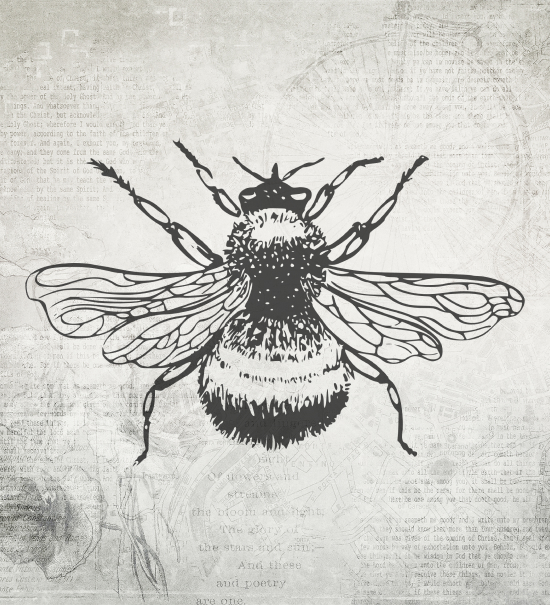
- 온대지역분포
- 세계 300여종 분포, 국내 21종 서식 기록
- 강한 귀소본능
- 꿀벌처럼 여왕벌 주도의 봉군단위 계급사회생활
- 특이 방화행동
- 가슴근육의 진동에 의한 진동채이행동(Buzz foraging behavior)
- 혀가 길게 발달
- 꿀벌이 기피하는 꽃자루가 긴꽃에 방화 활동 가능
- 악환경 적응성
- 저온(5-6℃), 흐리거나 약한 눈, 비에도 방화 활동
봉군 이용 장점
원예 및 과수에 호박벌 (땅뒤영벌) 이용시 얻을수 있는 장점
-
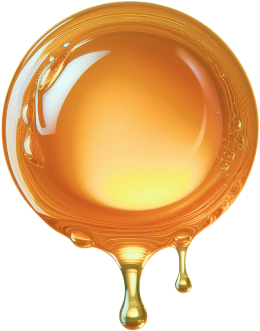
상품과율 및 수확량
18~27%
-
수분율 및 결실율
30%
-
기형과 및 공동과
25~30%
-
ha당 소득
3000,000
- 노동력 절감
- 약제 수정작업 대체(1군당 200~600평 수분활동가능)
- 결실률 확보
- 기형과 및 공동과가 감소해 생산성 증대
- 품질 경쟁력
- 과실 무게, 크기, 종자수, 당도, 산도증가
- 수분 식별성
- 꿀벌 기피하는 긴 통꽃 수분양호, 꽃에 이빨흔적 남음
- 생물 다양성
- 작물과 유용곤충 공존, 맹독성 농약회피
- 친환경 농업
- 고품질 저공해 과채류 생산기여 및 지역상품 브랜드화
호박벌 연구
- 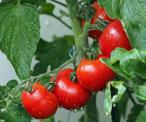
토마토
- 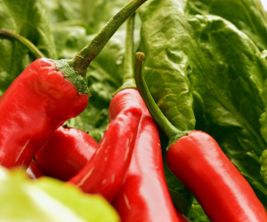
고추
- 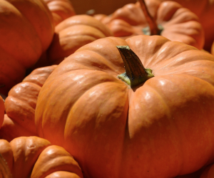
호박
- 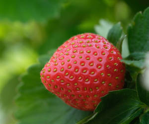
딸기
- 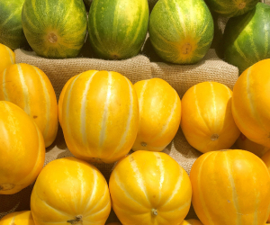
참외
- 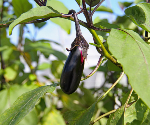
가지
- 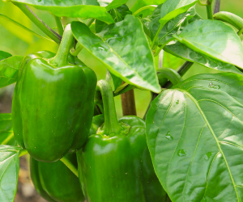
피망
- 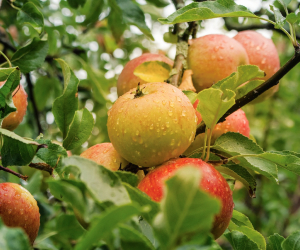
사과
- 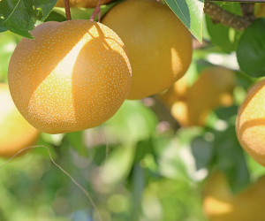
배
- 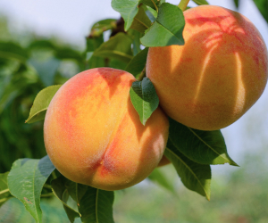
복숭아
- 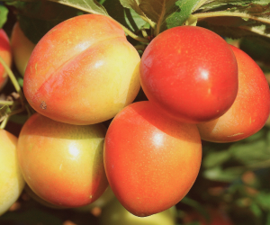
자두
대상작물
시설채소 - 토마토, 고추, 호박, 딸기, 참외, 가지, 피망 등
과수 - 사과, 배, 복숭아, 자두 등
사용면적 및 활동 기간
| 토마토 | 고추 | 수박, 참외 | ||
|---|---|---|---|---|
| 완숙 | 방울 | |||
| 사용면적 |
300 - 600평 (1,000 - 2,000m²) |
200 - 400평 (700 - 1,400m²) |
400 - 450평 (1,350 - 1500m²) |
250 - 300평 (800 - 1,000m²) |
| 설치높이 | 0.5 ~ 1m | 0.5 ~ 1m | 0.5 ~ 1m | |
| 활동기간 | 1 ~ 2개월 | |||
| 작물재식 밀도 및 환경에 따라 면적과 활동기간의 감가 있음 | ||||